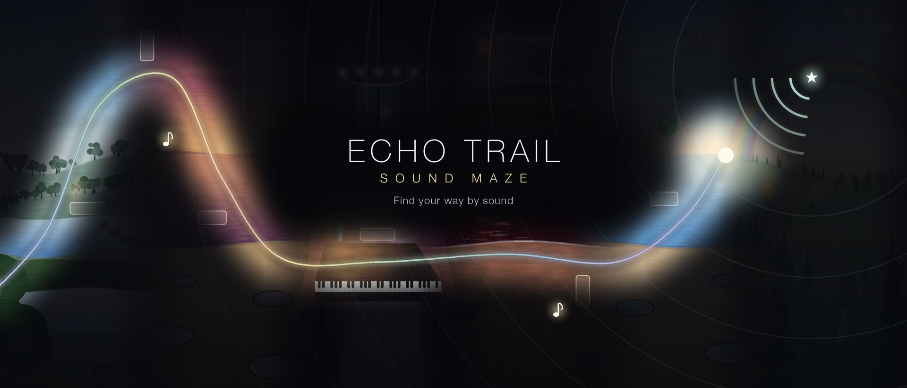
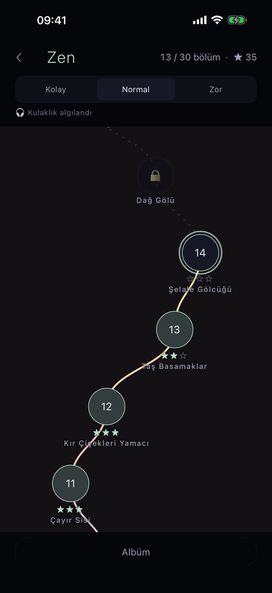
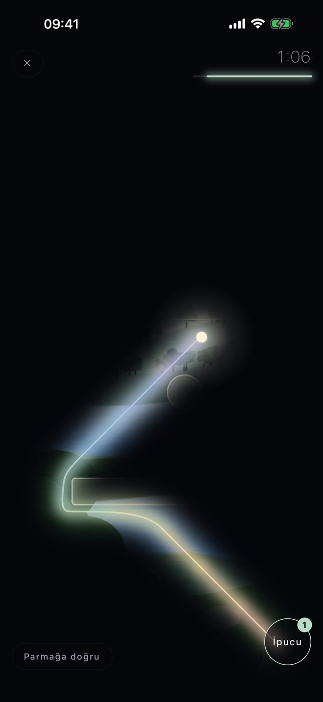
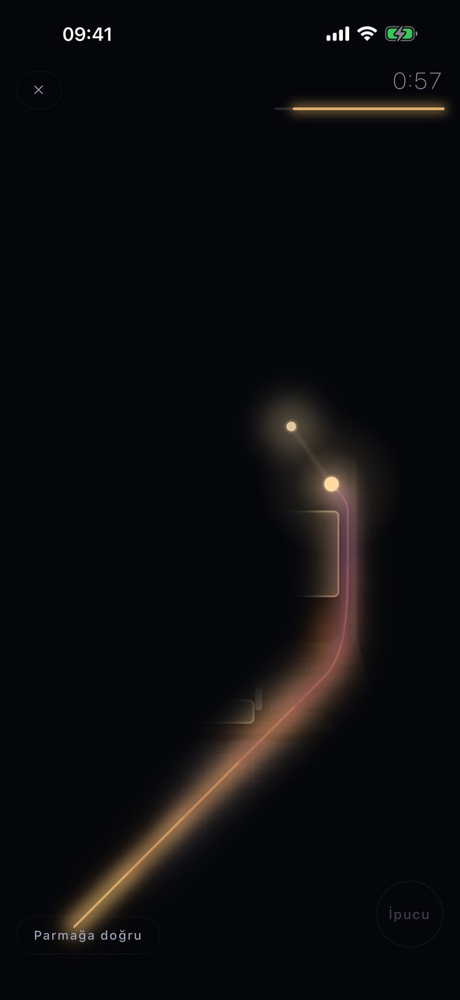
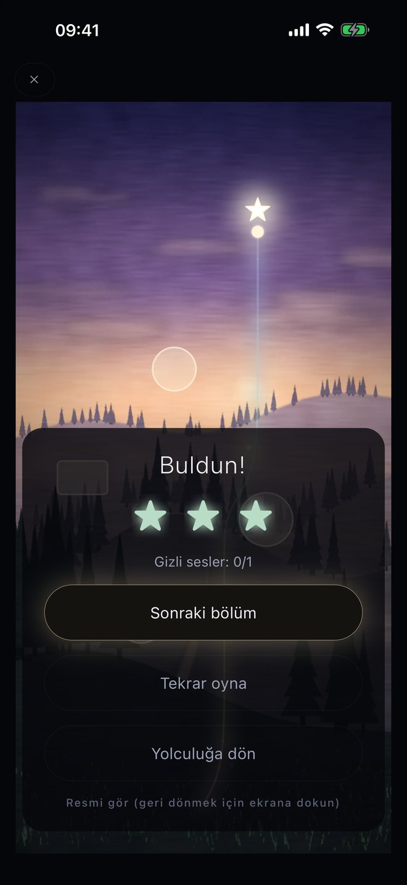

Echo Trail
Yolunu sesle bul
Ekran karanlık. İleride bir yerde bir ses seni çağırıyor. Onu kulaklarınla takip et, göremediklerinin yanından hissederek geç ve gezdiğin yerin aydınlanışını izle.
Yakında App Store'daiPhone ve iPad için
Kulaklarınla oynadığın bir oyun
Dinle
Sol kulak, sağ kulak, daha yüksek, daha net, daha sık: ses sana nereye gideceğini söyler. Boğuk ve pes geliyorsa arkandadır.
Hisset
Duvarlar, ağaçlar ve su görünmezdir. Dokunduğunda onların olduğu taraftan tok bir ses duyar, hafif bir titreşim hissedersin.
Ortaya çıkar
Yürüdüğün yol renklenir. Sese ulaştığında o mekânın resmi açılır ve albümüne eklenir.
Senin tarzın
Parmağını takip et, joystick kullan ya da telefonu eğ. Kulaklıkla en güzeli; kulaklıksız oynarken yumuşak dalga halkaları yönü gösterir.
Dört yolculuk, 120 bölüm
Zen
Doğada gün boyu süren bir yürüyüş. Acele yok: süre bitse de yürümeye devam edersin.
Gizem
Eski bir konakta biri kayboldu. Otuz oda, otuz mektup, tek bir hikâye.
Gerilim
Gece boyunca bir şey peşinde. Durma, yürü. Küçük çocuklar için uygun değil.
Neşeli
Panayırda bir gün: cıvıl cıvıl sesler, toplanacak yıldızlar, gökkuşağı izler.
İçeriden bir bakış




Bilmen gerekenler
- Ücretsiz oynanır; bazı bölümlerin arasında reklam çıkar.
- İsteğe bağlı tek bir satın alım bu reklamları kaldırır ve her bölümde fazladan bir ücretsiz ipucu verir.
- Hesap ya da kayıt yok. İlerlemen cihazında kalır.
- Türkçe ve İngilizce.